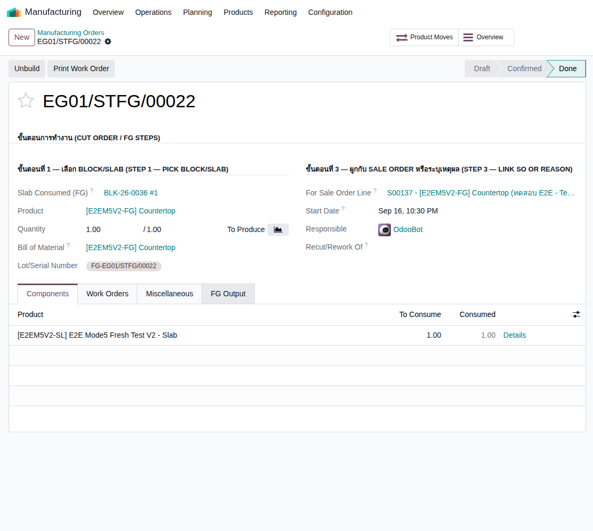
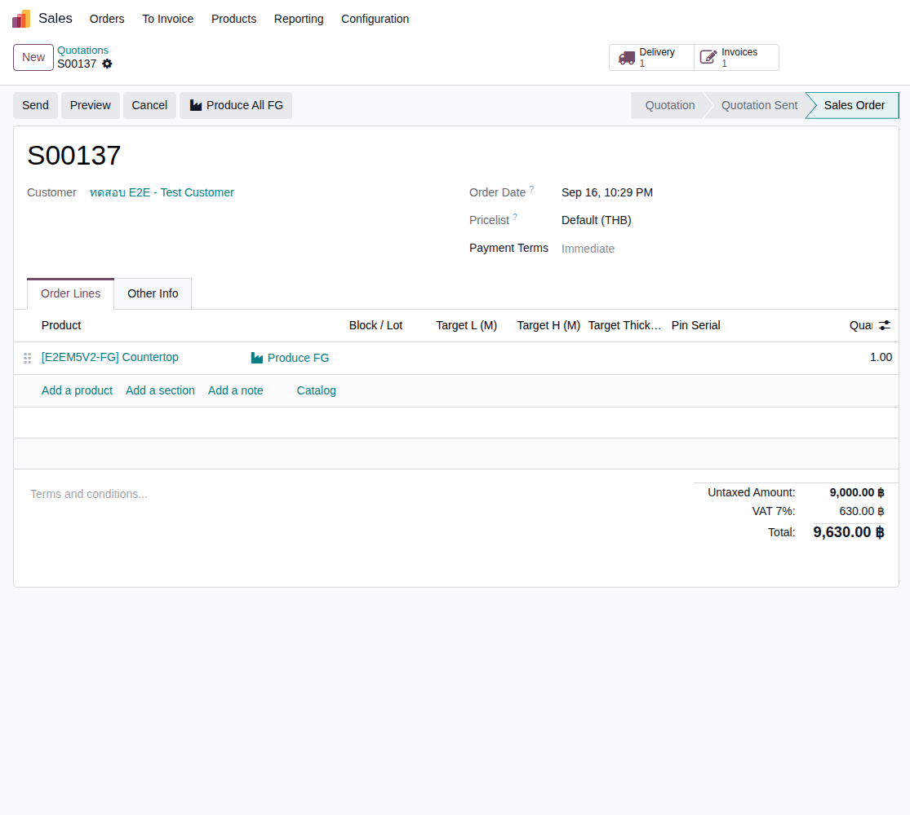
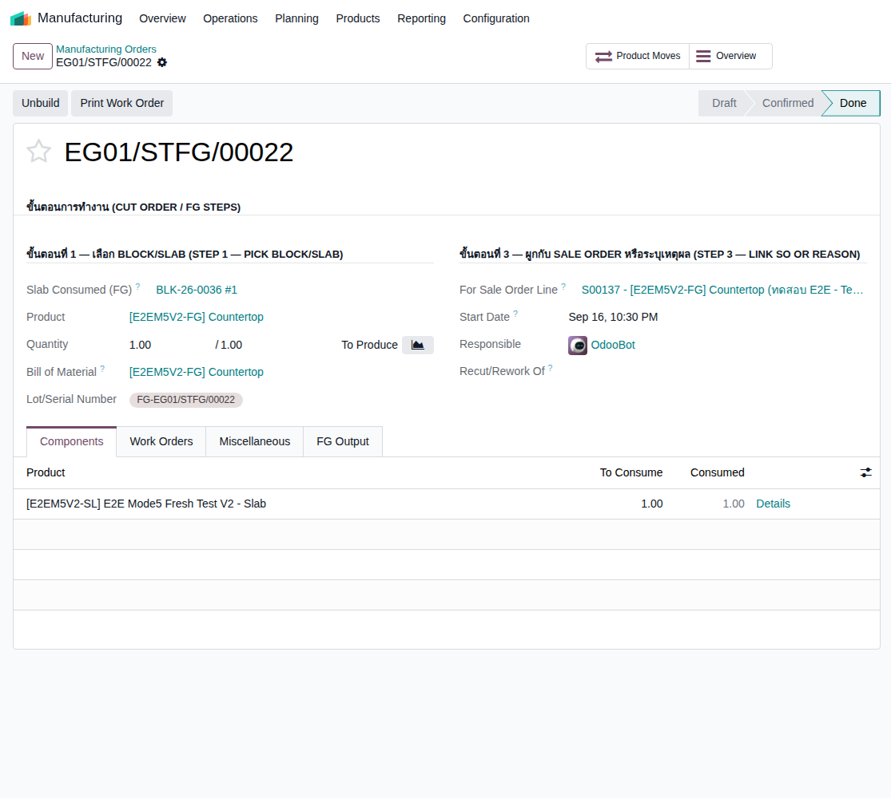
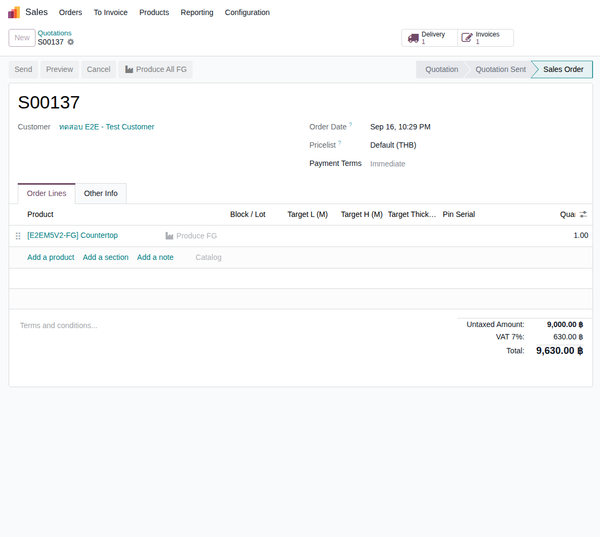
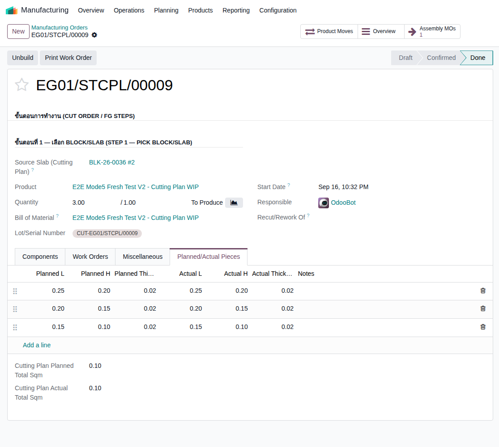
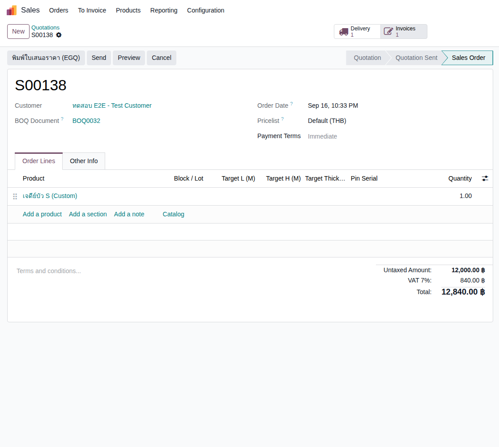
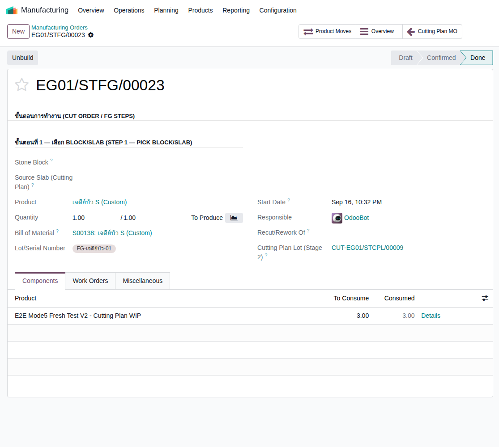
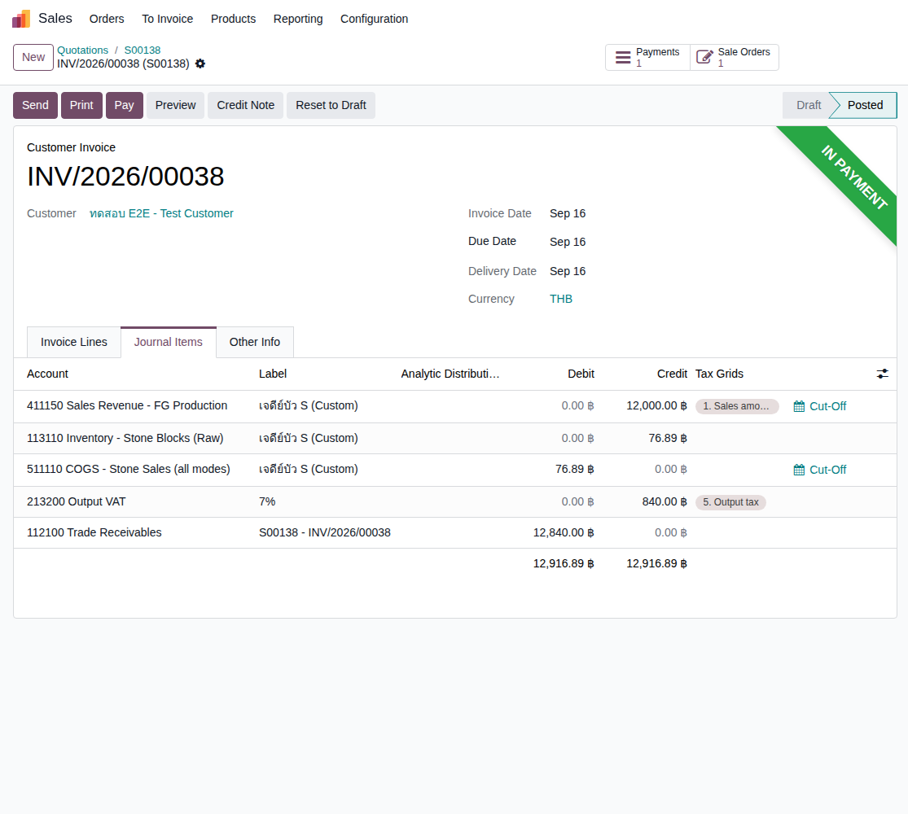

Empire Stone × Empire Granite — QA
Test Cases: E2E Flow — Mode 5 (Slab → Finished Goods)
เรื่องราวขายสินค้าสำเร็จรูป (Finished Goods) ที่ต้องผลิตจากแผ่นหิน (Slab) ครอบคลุมทั้ง 2 แบบ: Standard (สินค้าที่มี BOM ตายตัว เช่น Countertop — "Produce FG" สร้าง MO ตรงเลย ไม่ผ่าน wizard แล้วตาม ADR-067) และ Custom (งานสั่งทำเฉพาะที่ไม่มี BOM ตายตัว เช่น เจดีย์บัว/ซุ้มบัว — ใหม่ทั้งหมดจาก ADR-068 session นี้ ผ่าน 2 ขั้น "ถอดแบบ" แล้ว "ประกอบ") เดินตามได้เองแม้ไม่ใช่ technical user เขียนใหม่ทั้งชุด 16 ก.ย. 2026 ตัวเลข "ตัวอย่างจริง" มาจากการรันจริงรอบนี้บน mbx-ee-dev (ผสมทั้งเบราว์เซอร์จริงและ odoo shell ที่เรียกฟังก์ชันธุรกิจจริงตัวเดียวกับปุ่มบนหน้าจอ) ไม่ใช่ตัวเลขสมมติ
13Test Case ทั้งหมด
3หมวด
11High Priority
2Medium Priority
0Low Priority
G1. เตรียมแผ่น (Slab) ก่อนผลิต — เหมือน Mode 3 ทุกประการ
ตัด Block เป็น Slab ล่วงหน้า ก่อนขายจริง — reuse กลไกเดียวกับ Mode 3 (Block-to-Slab) ไม่มีอะไรใหม่ · 1 test case
| TC ID | Scenario | Precondition | Steps | ข้อมูลตัวอย่าง | Expected Result | Priority | ภาพหน้าจอ |
|---|---|---|---|---|---|---|---|
| TC-E2E-M5-01 | ตัด Block เป็น Slab ไว้ล่วงหน้า (ยังไม่ผูกกับ SO ใดๆ) ใช้กลไกเดียวกับ Mode 3 (Block-to-Slab) เป๊ะๆ — Mode 5 ไม่มีขั้นตอนตัดของตัวเอง ต้องมี Slab พร้อมอยู่ในสต็อกก่อนเสมอ |
มี Block พร้อมอยู่แล้วในสต็อก (ยังไม่ตัด) จาก Material ที่ตั้งค่า Finished Good ไว้ครบ (มี Block/Slab/FG 3 สินค้า) |
|
Stone Block = BLK-26-0036 Target Slab L (M) = 1.50 Target Slab H (M) = 1.00 |
ได้แผ่นหินจริง 1 แผ่นเข้าสต็อก (ตัวอย่างจริง: BLK-26-0036 #1, 1.50 ตร.ม.) Block เหลือ CBM ส่วนที่ยังไม่ตัดไว้ขายต่อได้ (ตัวอย่างจริง: เหลือ 2.97 CBM จาก 3.00) | Medium |  |
G2. ขาย + ผลิต — สินค้า FG มาตรฐาน (Standard, เช่น Countertop)
ADR-029/067 — Produce FG สร้าง MO ตรงเลย ไม่ผ่าน wizard แล้ว · 6 test cases
| TC ID | Scenario | Precondition | Steps | ข้อมูลตัวอย่าง | Expected Result | Priority | ภาพหน้าจอ |
|---|---|---|---|---|---|---|---|
| TC-E2E-M5-02 | เพิ่มบรรทัดสินค้า FG มาตรฐานใน Sale Order แล้ว Confirm | มี Slab พร้อมอยู่แล้วในสต็อกจาก TC-E2E-M5-01 |
|
ลูกค้า = "ทดสอบ E2E - Test Customer" สินค้า = E2E Mode5 Fresh Test V2 - Countertop |
SO ยืนยันสำเร็จ ยอดรวม 9,630.00 บาท (รวม VAT) บรรทัดสินค้า FG ปรากฏลิงก์ "Produce FG" เพราะยังไม่มีสต็อก FG เลย — ตัวอย่างจริง: S00137 | High |  |
| TC-E2E-M5-03 | กดลิงก์ "Produce FG" — ระบบสร้าง Manufacturing Order ตรงทันที ไม่มี wizard popup แล้ว ✨ กลไกใหม่ (ADR-067, 14 ก.ย. 2026): เดิมกดแล้วเด้ง wizard ให้เลือก Slab/จำนวน ตอนนี้กดแล้วได้ MO ฉบับร่างเปิดขึ้นมาเลย ระบบจับคู่ Slab ที่ Material ตรงกันให้อัตโนมัติ ไม่ต้องเลือกเองก็ได้ |
ทำ TC-E2E-M5-02 เสร็จแล้ว |
|
- | เปิดหน้า Manufacturing Order ฉบับร่างทันที (ไม่ใช่ popup) ช่อง Slab ที่ใช้ผลิตเติมให้อัตโนมัติเป็นแผ่นที่มี Material ตรงกันและสถานะ Available — ตัวอย่างจริง: MO EG01/STFG/00022, Slab BLK-26-0036 #1, ผูกกับ "For Sale Order Line" = S00137 ให้อัตโนมัติ | High |  |
| TC-E2E-M5-04 | ย้ายด่วน (Move to Production) แล้ว Confirm Manufacturing Order | ทำ TC-E2E-M5-03 เสร็จแล้ว |
|
- | Slab ถูกย้ายไปสถานีผลิต (Stone Production) สำเร็จ แล้ว Confirm ผ่านทันที ไม่มี error — สถานะ MO เปลี่ยนเป็น Confirmed | High | |
| TC-E2E-M5-05 | ทำ Work Order ให้เสร็จ แล้วบันทึกขนาดจริงในแท็บ "FG Output" ✨ กลไกใหม่ (ADR-067): แท็บนี้แทนที่ wizard เดิมทั้งหมด — Factory กรอกขนาด/จำนวนที่ตัดได้จริงหลังตัดเสร็จ ตรงกับใบรายงานตัดกระดาษของโรงงานเป๊ะ ไม่มีคอลัมน์สินค้าเพราะทุกแถวนับรวมเป็นสินค้า FG ตัวเดียวของ MO นี้อยู่แล้ว |
ทำ TC-E2E-M5-04 เสร็จแล้ว |
|
Width = 1.48, Length = 0.98, Thickness = 0.02, Qty = 1 | Work Orders ขึ้น Finished ครบ MO เปลี่ยนสถานะเป็น "To Close" แท็บ FG Output มี 1 แถวตามที่กรอก | Medium |  |
| TC-E2E-M5-06 | กด "Complete FG Production" — ได้สินค้า FG จริงเข้าสต็อก | ทำ TC-E2E-M5-05 เสร็จแล้ว |
|
- | MO เสร็จสมบูรณ์ (สถานะ Done) ได้ Lot/Serial ใหม่ของสินค้า FG (ตัวอย่างจริง: FG-EG01/STFG/00022) Slab ที่ใช้เป็นวัตถุดิบเปลี่ยนสถานะเป็น Consumed สินค้า FG 1 หน่วยเข้าสต็อกจริง | High | |
| TC-E2E-M5-07 | จัดส่ง ออกใบแจ้งหนี้ และรับชำระเงิน (Standard) | ทำ TC-E2E-M5-06 เสร็จแล้ว |
|
- | ใบส่งของ Done (ตัวอย่างจริง: EG01/OUT/00091) ใบแจ้งหนี้ Posted ยอด 9,630.00 (ตัวอย่างจริง: INV/2026/00037) แล้วขึ้น In Payment — Journal Items 5 บรรทัด สมดุล 10,110.00 = 10,110.00 (COGS 480.00 ไม่ใช่ 0) | High |  |
G3. ขาย + ผลิต — งาน Custom สั่งทำพิเศษ (ADR-068, เช่น เจดีย์บัว/ซุ้มบัว)
ใหม่ทั้งหมด session นี้ — Stage 2 (ถอดแบบ) + Stage 3 (ประกอบ) สำหรับงานที่ไม่มี BOM ตายตัว · 6 test cases
| TC ID | Scenario | Precondition | Steps | ข้อมูลตัวอย่าง | Expected Result | Priority | ภาพหน้าจอ |
|---|---|---|---|---|---|---|---|
| TC-E2E-M5-08 | Stage 2 — สร้าง "Cutting Plan" MO ถอดแบบ Slab เป็นชิ้นย่อย ✨ กลไกใหม่ทั้งหมด (ADR-068, session นี้): ใช้เมื่องานสั่งทำไม่มีสินค้า FG มาตรฐานให้เลือก ต้องเอา Slab มา "ถอดแบบ" เป็นชิ้นเล็กๆ ก่อน ทุกชิ้นจาก MO เดียวกันจะแชร์ Lot เดียวกัน (กันของปนกันตอนขนย้าย ไม่ใช่ QC รายชิ้น) |
มี Slab พร้อมอยู่แล้วในสต็อก (แยกจาก Slab ที่ใช้ใน G2) |
|
Source Slab = BLK-26-0036 #2 ชิ้นที่ 1: 0.25 x 0.20 m ชิ้นที่ 2: 0.20 x 0.15 m ชิ้นที่ 3: 0.15 x 0.10 m |
MO เสร็จสมบูรณ์ (ตัวอย่างจริง: EG01/STCPL/00009) ได้ชิ้นงานจริง 3 ชิ้้น สถานะ "Staged (Cutting Plan WIP)" ทุกชิ้น — แชร์ Lot เดียวกันทั้งหมด (ตัวอย่างจริง: CUT-EG01/STCPL/00009, รวม 3.00 หน่วย) ชิ้นเหล่านี้จะไม่โผล่ในหน้า "Select Slabs" ของโหมดขายอื่นเลย เพราะยังไม่ใช่สต็อกขายได้จริง | High |  |
| TC-E2E-M5-09 | สร้าง Sale Order ขายสินค้า Custom (ไม่มี FG มาตรฐานให้เลือก) | ทำ TC-E2E-M5-08 เสร็จแล้ว มี BOQ Document ผูกกับ Sale Order นี้ไว้ (จำเป็นสำหรับ wizard สร้าง BOM ในขั้นถัดไป) |
|
ลูกค้า = "ทดสอบ E2E - Test Customer" สินค้า = เจดีย์บัว S (Custom) |
SO ยืนยันสำเร็จ ยอดรวม 12,840.00 บาท (รวม VAT) บรรทัดสินค้าปรากฏลิงก์ "Produce FG" เหมือนเดิม แต่จะพาไปหน้าต่าง "สร้าง BOM จาก BOQ" แทน (ไม่ใช่สร้าง MO ตรงแบบ G2) เพราะสินค้านี้ไม่มี FG Raw Material ตายตัว — ตัวอย่างจริง: S00138 | High |  |
| TC-E2E-M5-10 | Stage 3 — กด "Produce FG" เปิด wizard "สร้าง BOM จาก BOQ" เลือก Cutting Plan Lot ✨ ส่วนขยายใหม่ของ wizard เดิม (ADR-064 เดิม + ADR-068 เพิ่มเข้ามา): นอกจากเลือกวัสดุจาก BOQ ได้เหมือนเดิม ตอนนี้เลือก "Cutting Plan Lot (Stage 2)" ได้ด้วย — ระบบดึงมาทั้งก้อน (จำนวนเต็มของ Lot นั้น) ไม่ต้องกรอกจำนวนเอง |
ทำ TC-E2E-M5-09 เสร็จแล้ว |
|
Cutting Plan Lot (Stage 2) = CUT-EG01/STCPL/00009 | สร้าง BOM + Manufacturing Order สำเร็จ แต่ MO ยังอยู่สถานะ Draft ให้ตรวจสอบก่อน (ต่างจากงาน Custom ที่ไม่ใช้ Cutting Plan Lot ซึ่งจะ Confirm ให้อัตโนมัติทันที) — ตัวอย่างจริง: EG01/STFG/00023 มีปุ่ม "Cutting Plan MO" เชื่อมกลับไปหา MO ของ Stage 2 ให้แล้ว | High |  |
| TC-E2E-M5-11 | Confirm MO Stage 3 — ระบบเติมวัตถุดิบจาก Lot ให้อัตโนมัติ | ทำ TC-E2E-M5-10 เสร็จแล้ว |
|
- | แท็บ Components เติมแถววัตถุดิบจาก Cutting Plan Lot ให้อัตโนมัติ จำนวนเท่ากับที่มีอยู่เต็มก้อน (ตัวอย่างจริง: E2E Mode5 Fresh Test V2 - Cutting Plan WIP, 3.00 หน่วย) Confirm ผ่านสำเร็จ ไม่ต้องกรอกอะไรเพิ่มเอง | High | |
| TC-E2E-M5-12 | ทำ MO ให้เสร็จด้วยปุ่ม Produce มาตรฐานของ Odoo (ไม่มีปุ่มเฉพาะ) งาน Custom ใช้ปุ่ม Produce ธรรมดาของ Odoo เลย (ตาม ADR-064 เดิม "มาตรฐาน ODOO") ต่างจาก Stage 2/G2 ที่มีปุ่มเฉพาะของโมดูล |
ทำ TC-E2E-M5-11 เสร็จแล้ว |
|
- | MO เสร็จสมบูรณ์ (สถานะ Done) ได้สินค้า Custom 1 หน่วยเข้าสต็อกจริง ชิ้นงานทั้ง 3 ชิ้นจาก Stage 2 เปลี่ยนสถานะจาก "Staged" เป็น "Consumed" อัตโนมัติ (ไม่ค้างโชว์เป็น WIP อีกต่อไป) — กลับไปดูที่ MO ของ Stage 2 จะเห็นปุ่ม "Assembly MOs" เชื่อมมาที่ MO นี้แล้ว | High | |
| TC-E2E-M5-13 | จัดส่ง ออกใบแจ้งหนี้ และรับชำระเงิน (Custom) | ทำ TC-E2E-M5-12 เสร็จแล้ว |
|
- | ใบส่งของ Done (ตัวอย่างจริง: EG01/OUT/00092) ใบแจ้งหนี้ Posted ยอด 12,840.00 (ตัวอย่างจริง: INV/2026/00038) แล้วขึ้น In Payment — Journal Items 5 บรรทัด สมดุล 12,916.89 = 12,916.89 (COGS 76.89 ไม่ใช่ 0) | High |  |